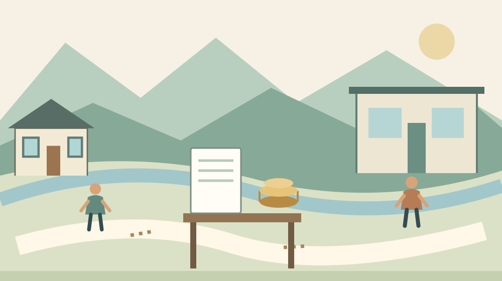

森町の実家リースバック｜売却後の家賃を確認
Q. 親が実家のリースバックを勧められた。売却代金が入れば安心？
実家のリースバックは売却後も家賃の支払いが続きます。売却額だけで決めず、家賃の年額、住める期間、更新・修繕の条件を確認してください。森町の相場や個別契約の有利不利は本記事では判断できません。今日は提示された月額家賃を12倍し、契約書の期間欄と並べるところから始められます。
家を残してきた家族の負担から考える
森町の実家を守る家族は、建物の修繕だけを考えているわけではありません。通院や買い物を支え、離れて住む子が帰る日を調整し、庭や家財の手入れも続けています。その暮らしを大きく変えずに資金を用意したいという希望には、切実な理由があります。
私は大石浩之（磐田市／不動産業）です。今回は、実家を売った後も借りて住むリースバックを取り上げます。家を持ち続けるか、売って住み替えるかという議論の前に、同じ家に住み続けるための支出を見える形にする記事です。
売却代金は一度入るお金です。家賃は住む間、繰り返し出ていくお金です。私は、この時間の違いを揃えずに二つの数字を比べるべきではないと考えます。手元資金が増える瞬間だけを見ると、その後の生活費が見えなくなります。
本記事の制度・相談情報は2026年10月27日に確認しました。事実の整理には国民生活センターと森町の公式案内を使います。全国の相談事例を、森町で起きた出来事や私自身が受けた相談として紹介することはしません。
2026年8月の注意喚起で分かること
国民生活センターは2026年8月4日、自宅のリースバックに関する注意喚起を公表しています。住宅を売る契約と、その住宅を借りる契約を結び、売却後も家賃を払いながら住む仕組みについて、相談事例と確認事項を示した資料です。
相談事例には、契約後に家賃の引上げを求められた人の話があります。リフォーム代金を払うためにリースバックを勧められた事例や、買戻しを希望した際に売却額を超える金額を提示された事例も載っています。個別の経緯を全国の契約すべてに当てはめることはできません。
国民生活センターは、長く住むと家賃の支払総額が売却代金を上回る場合があると説明しています。住み続けられるという言葉は、支出がなくなるという意味ではありません。同じ建物でも、所有して暮らす場合と借りて暮らす場合では条件が変わります。
意外に思われるかもしれませんが、消費者が自宅を不動産業者に売る場合、宅地建物取引業法のクーリング・オフは適用されません。国民生活センターも明記しています。訪問を受けて契約したから無条件で取り消せる、と考えないでください。
契約を解除できるか、どの費用が必要かは契約内容や進み具合で異なります。すでに署名した場合は、契約書を手元に置いて消費生活相談や法律の専門家へ相談してください。本記事は、個別の解除権や違約金の有効性を判定するものではありません。
月額を年額と居住期間に置き換える
リースバックの比較では、家賃を同じ期間で計算すると負担を捉えやすくなります。ここから示す数字は計算方法の説明用です。森町の賃料相場でも、取扱業者の見積もりでもありません。実際の検討では提示された金額に置き換えます。
仮に家賃が月7万円なら、1年間で84万円です。同額のまま5年住めば420万円、10年なら840万円になります。計算は7万円に12か月と年数を掛けたものです。家賃改定、更新時の費用、保険や修繕の支出は含んでいません。
私は、まず1年分を家計簿の横に書く方法を勧めます。年金など毎月の収入から、食費、医療費、光熱費を払った後、家賃に充てられる金額が残るかを確認します。売却代金を取り崩すなら、毎月いくら不足するのかを別の欄に書きます。
仮に家賃のうち毎月2万円を売却代金から補う計画なら、その取り崩しは年24万円です。ただし、生活費や介護費の変化はこの計算に含みません。一定額を割っただけの年数を、そのまま安心して暮らせる期間と呼ぶことはできません。
家族の援助を計算に入れる場合も、出せる金額を本人同士で確かめます。子が毎月支払う前提を、親に説明せず書き込むのは避けたいところです。支援する側の住居費や教育費もあります。続けられる額と、続けたい気持ちは分けて整理します。
税金や修繕費がどちらの負担になるかも、契約書で照合する項目です。家を売れば建物に関する支出がすべて消えると決めつけず、家賃以外の費用を質問します。税務上の扱いは個別事情で異なるため、売却前に税理士などへ確認してください。
良い点は暮らしの変更を抑えて検討できること
リースバックは、売却後も同じ家に住む選択肢を検討できる仕組みです。国民生活センターの説明にも、売却と賃貸借を同時に結ぶ形が示されています。ただし、その家で暮らせる期間や条件は、個々の契約で確認する必要があります。
私は、親が慣れた家での生活を望んでいるなら、その希望を最初から切り捨てるべきではないと考えます。住み替えには荷物の移動だけでなく、通院先や日々の買い物の見直しも伴います。現金の大小だけでは測れない負担が家族にはあります。
家族が売却代金の使い道を具体的に説明できることも、検討の土台になります。必要な支出の額と時期が分かれば、手元資金をどう使うかを落ち着いて比べられます。急いで資金が必要という言葉を、何月に何円必要という記録へ直してみます。
比較の過程で、家族の希望が分かれること自体にも意味があります。親は同じ家で暮らしたい。子は管理の負担を減らしたい。双方がそう考えているなら、売却額の相談に入る前に違いを確認できます。契約を結ばなくても、希望が見えれば次の相談は具体的になります。
注文したい点は住める条件の説明
リースバックの説明には、売却価格と同じくらい、住み続けられる条件を詳しく示してほしいと私は考えます。国民生活センターは、賃貸借の更新や再契約が拒まれる場合もあると注意を促しています。長く住めるという説明だけでは、家族の計画を立てられません。
確認したいのは、賃貸借契約の種類、開始日と終了日、更新や再契約の条件です。家賃を変える場合の条項も探します。口頭の説明と書面が違って見えたら、その場で理解したふりをせず、どの条項を根拠に説明しているのか尋ねます。
設備が故障した場合も、誰へ連絡し、誰が費用を負担するかを確認します。屋根、給湯器、配管などを一括して修繕と呼ぶと、質問が曖昧になります。気になっている箇所を写真に残し、項目ごとに答えてもらうほうが判断材料を揃えやすくなります。
買戻しを考えるご家族は、可能かどうかだけでなく、時期、金額の決め方、条件を確認します。国民生活センターの相談事例には、希望した金額で買い戻せず困ったケースがあります。将来買い戻すつもりという家族の希望を、契約上の約束と混同しないことです。
私は、親が同じ家に残る希望と、長期の家賃負担をどう釣り合わせるかに迷います。家計の計算だけで住み慣れた場所の価値は決められません。一方、希望を尊重するためにも、払えない条件を見ないまま契約することには賛成できません。

対案・結論は比較する紙を一枚作ること
実家のリースバックを検討する日は、売却の結論を出す日でなくても構いません。私は、一枚の紙に売却代金、月額家賃、契約期間、家賃以外の費用、未回答の質問を並べる方法を提案します。広告や営業担当者の説明とは別に、家族の確認用として残します。
最初の作業は、提示された月額家賃を12倍することです。その横に、家計から支払える年額を書きます。差額があれば、売却代金から補うのか、家族が支えるのかを空欄のままでも示します。分からない欄を分からないと残すことが、次に聞く内容になります。
別の選択肢を比べる場合は、通常の売却と住み替え、当面の保有など、家族が現実に考えられる範囲に絞ります。選択肢を増やすだけでは疲れてしまいます。それぞれについて、初期費用、毎月の支出、移動、管理の担当者を同じ項目で書くと違いが見えます。
売却の準備段階では、森町で家を売る前の境界・接道・名義の確認も判断材料になります。土地と建物の状態が分からないまま金額だけを比べると、何を含む提案なのか理解しにくくなります。分からない事項は専門家へ確認します。
仲介による売却と業者への直接売却では、関わる当事者や費用の説明が異なります。空き家売却の仲介手数料の記事を読む場合も、目の前の契約がどの形なのかを先に確認してください。別の取引の費用条件をそのまま当てはめないことです。
森町の窓口と物件の相談を使い分ける
森町公式サイトには、消費生活相談員による相談の案内があります。契約や勧誘への不安は、物件の査定とは別の相談です。予約や利用方法は町の最新案内で確認し、相談時には契約書、見積書、広告、相手との連絡記録を手元に用意します。
消費生活の相談では、いつ、誰から、何を言われ、どこまで進んだかを順番に伝えます。まだ署名していないのか、代金が動いたのかで確認事項が変わります。親の話を家族が聞き取る場合も、推測した事情と本人が話した内容を区別してメモにします。
森町の空き家・空き地バンクは、物件情報を登録し、利用希望者へ届ける仕組みです。町の案内では、町が交渉や契約を行わないこと、物件管理を行わないことが示されています。リースバックの公的な保証や、価格の適正さを認定する制度ではありません。
住み替え後の活用を考えるときは、町のバンク案内が情報の入口になります。ただし、今住んでいる実家が登録できるかどうかは別の確認です。今回の契約相談と、将来の空き家活用を一緒に進め過ぎず、先に知りたい問いを担当先に伝えます。
相談の使い方を具体的に知りたい方には、森町の消費生活相談の記事もあります。日時や受付条件は利用前に公式情報で再確認してください。町の窓口が開いていない時間に困った場合も、全国共通の188から相談先を確認できます。
家族に残す記録は金額と説明の出所
リースバックの検討記録には、数字だけでなく説明を受けた日と相手の名前を残します。最初の案と修正後の案を分け、どの書面が現在の提案なのか分かるようにします。家族の一人だけが経緯を知っている状態を避けるための整理です。
親が希望する生活も同じ紙に一行残します。同じ家で暮らしたい、通院先を変えたくない、子に負担をかけたくないなど、本人の言葉を使います。家族が考える望ましい暮らしに置き換えないことが、金額の比較を本人の判断へつなげます。
町内のリースバック取扱業者、個別の査定価格、賃料相場は本記事では確認していません。資料にない数字で有利不利を言い切ることはできません。実家の権利関係や契約条件に疑問があれば、不動産業者に加え、必要に応じて法律・税務の専門家へ確認します。
大石の視点
私はこう考えます。実家の話し合いで一枚の提案書を囲むなら、最初に見るのは大きく書かれた売却額だけではありません。その下に毎年払う家賃を書き、親が望む暮らしの期間と並べます。これは実際の相談を再現した話ではなく、私が重視する判断の順番です。家を売る話と、その後の家計を切り離さないために、数字を一年の暮らしへ翻訳します。
家を守ってきた努力は、契約の結論が何であっても消えません。売却を選ぶことが敗北でも、持ち続けることが正解でもありません。私は、同じ家に残る希望を尊重するほど、支出と期間の条件を先に確かめたいと思います。
今日の一歩は、家賃を年額に直して書くことです。計算して不安が残るなら、その不安を質問に変えられます。契約を急がず、親と家族が同じ数字を見て話せる状態を作る。その準備から、実家についての判断を始められます。
FAQ
売却後は必ず一生住み続けられますか。
必ず一生住めるとは限りません。国民生活センターは、賃貸借の更新や再契約が拒まれる場合もあると案内しています。契約の種類、期間、更新条件、家賃改定の条項を確認してください。口頭で長く住めると言われた場合も、契約書のどこに条件が書かれているかを尋ねます。個別の権利判断は専門家へ相談してください。
家賃と売却代金はどう比べればよいですか。
まず月額家賃を12倍して年額を出し、想定する居住年数と並べます。仮に月7万円なら年84万円、同額で10年なら840万円です。これは計算例で、森町の相場ではありません。家賃改定、更新費用、修繕などを別に確認し、毎月の収入と生活費から無理なく払えるかも家族で整理します。
訪問を受けて契約した場合は取り消せますか。
消費者が自宅を不動産業者に売却する場合、宅地建物取引業法のクーリング・オフは適用されません。ただし、個別にどのような対応が可能かは契約内容や経緯によって異なります。自己判断で諦めず、契約書と勧誘の記録をそろえ、森町の消費生活相談や188、法律の専門家へ早めに相談してください。
出典・確認日
2026年10月確認。開催・制度の数値は公式情報、評価と段取りの提案は執筆者の意見です。
- 国民生活センター：リースバックの注意喚起（2026年10月27日確認）
- 森町：消費生活相談員（2026年10月27日確認）
- 森町：空き家・空き地バンク（2026年10月27日確認）
開催日時、取扱条件、制度・数値は変わる場合があります。実際の利用前に主催者・担当窓口の最新案内を確認してください。個別の判断が必要な場合は、担当窓口や関係する専門家へご相談ください。